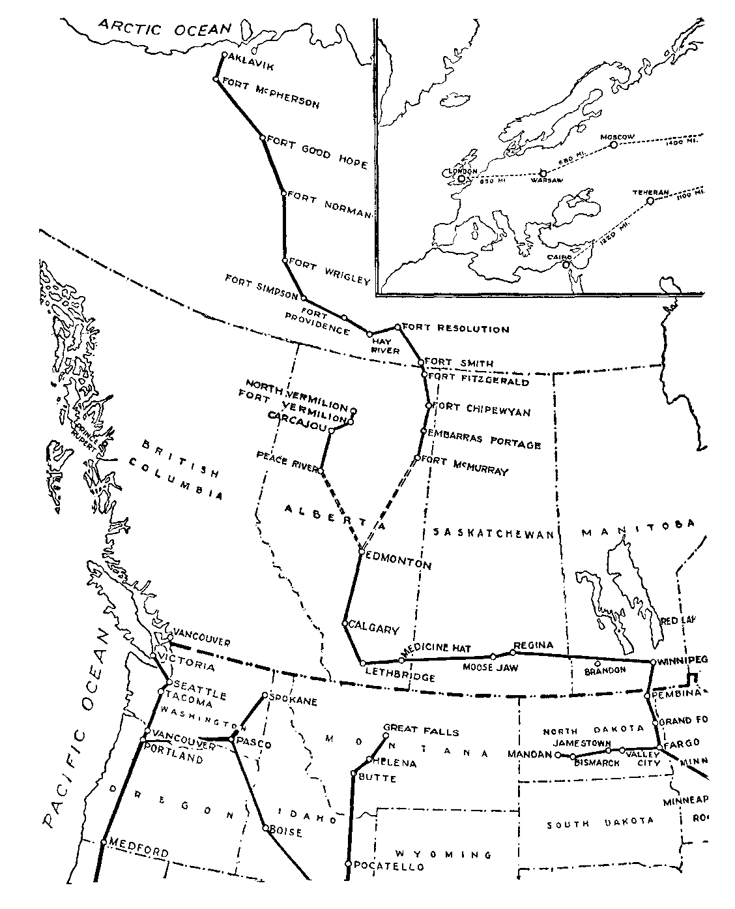
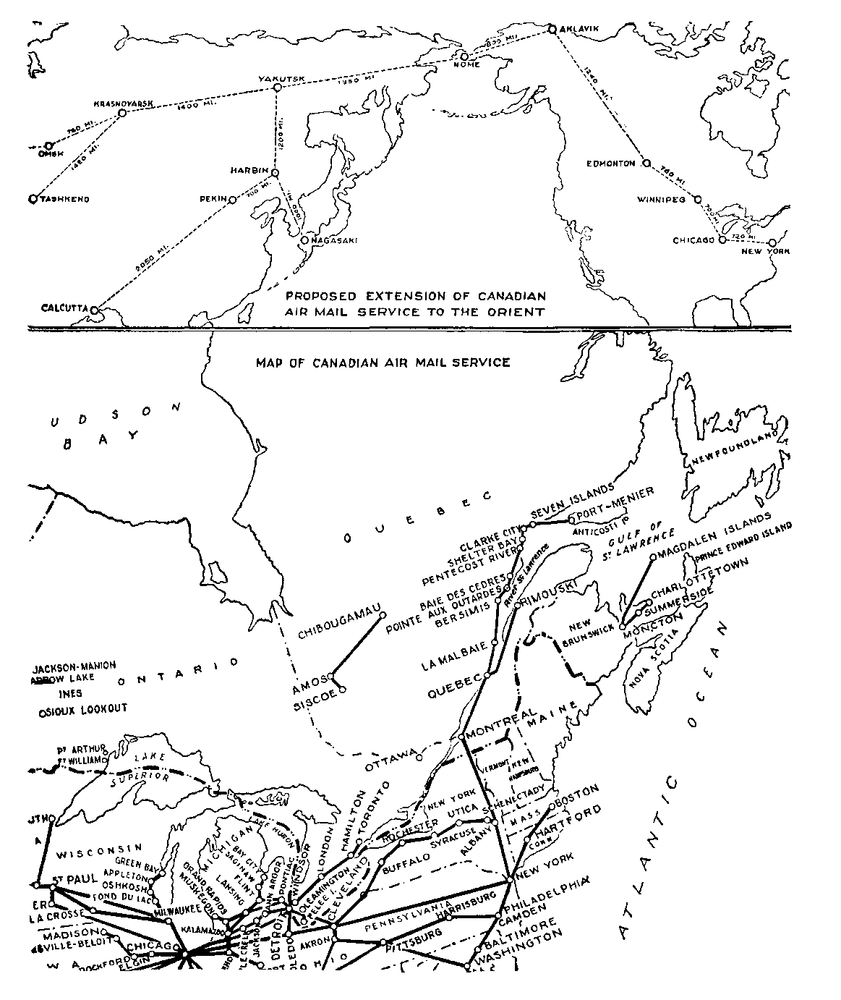
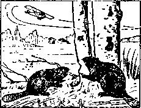
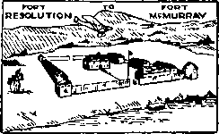
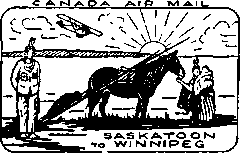
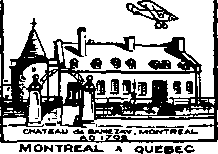
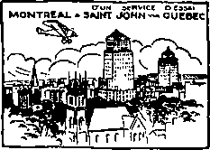

CANADA AIR MAIL
INAUGURATION O’ tXPiniMlNTAi. SERVICE

STJOHN •"» MONTREAL VIA QUEBEC
A JOURNAL OF FACT HOPE AND COURAGE
limHIIHIIIIIIIIIIIIIHIHHimillHHIIHIIIIIIIIIIIIIIIIIIIIIIIIII
in this issue
THE POSTS ANCIENT AND MODERN
HIGHROAD TO ASIA
CANADIAN AIR MAIL SERVICE SEEN FROM THE ’PLANE FIRST AND BETTER RESURRECTION
iiiiiiiiiiiiiiiiiiiiiiiiiiiiiiiiiiiiiiiiiiiiiiiiiiiiiiiiifiiiiiiiiiiiiiii
every other WEDNESDAY
five cents a copy one dollar a year Canada & Foreign 1.25
Vol. XIII. No. 322
January 20, 1932
CONTENTS
LABOR AND ECONOMICS
Pasadena’s Profitable Lighting
Spain Loses Third of Employees 244 1,000 a Day Sent to Prison . . 245 Discards Machines to Help
Ellensburg Municipal Plant . . 245
World Increase in Unemployment 246
Western Electric Will Hire
Pleading for Six-Hour Day . . 248
SOCIAL AND EDUCATIONAL
Seen from the ’Plane .... 244
Everybody to Be Commandeered 244
Americans Small Book-Buyers . 244
Size of the Radio Audience . . 244
Most People Agree with Hughes 245
Real Cause of World War . . 245 222,225 Speakeasies in U. S. . . 246 Southern Commission on
Lynching........247
The Inactive Social Surplus . . 248
German Communist Demands . . 248
How Lords Are Made .... 248
The Foolishness of War . . .'248
Sunday Newspaper a Necessity . 249
FINANCE—COMMERCE—TRANSPORTATION
The Posts—Ancient and Modern 227
Canada—on Highroad to Asia 236
Canadian Air Mail Service . . . 237
What the Shrinkage Amounts To 244
Capitalism on Trial for Life . 246
POLITICAL—DOMESTIC AND FOREIGN
Unreasonable Immigration Restrictions
How Tammany Secured Its
SCIENCE AND INVENTION
Kill Van Kull Bridge Completed 245
The Russian Ice Breakers . . 247
The George Washington Bridge . 247
TRAVEL AND MISCELLANY
Kaieteur Fall.......245
Terrible Drought in Zululand . 246
Conditions in Germany .... 246
Peace Soldiers of the Philippines 247
RELIGION AND PHILOSOPHY
What the Preachers Accomplished 244
Honesty, Decency and Veracity 244
First Resurrection and Better Resurrection
The Best Explanation .... 255
Published every other Wednesday at 117 Adams Street, Brooklyn, N. Y., U. S. A., by WOODWORTH, KNORR & MARTIN
Copartners and Proprietors Address: 117 Adams Street, Brooklyn, N. Y., U. 8, A, CLAYTON J. WOODWORTH . . Editor ROBERT J. MARTIN .. Business Manager NATHAN H. KNORR.. Secretary and Treasurer
Five Cents a Copy—$1.00 a Yeah Make Remittances to THE GOLDEN AGE Notice to Subscribers: For your own safety, remit by postal or express money order. We do not, as a rule, send acknowledgment of a renewal or a new subscription. Renewal blank (carrying notice of expiration) is sent with the journal one month before the subscription expires. Change of address, when requested, may be expected to appear on address label 'within one month.
Published also in Esperanto, Finnish, German, Japanese, Norwegian, Polish, Swedish.
. Offices in Other Countries British ............34 Craven Terrace. London, W. 2. England
Canadian...........40 Irwin Avenue, Toronto 5, Ontario, Canada
Australasian ...... 7 Beresford Rd., Strathfield, N. S. W., Australia South African..........6 Leile Street, Cape Town, South Africa
Entered as second-class matter at Brooklyn, N. Y., under the Act of March 3, 1S79.
Volume XIII Brooklyn, N. Y., Wedne»day, January 20, 1932 Number 322
The Posts—Ancient and Modem
the help of these relays one could travel 100 miles a day along the Roman roads.
In the days of the Emperor Theodosius, Cesar-ius, a magistrate of high rank, is known to have traveled from Cappadocia to Constantinople, 665 miles, and to have arrived the sixth day, about noon. In the Theodosian code some mention is made of post horsemen and orders given for their regulation.
It is known that China, in the year 1280 (A.D.) had 300,000 horses and men to carry communications; but all of the services so far mentioned were irregular. This article shows how very recent is regular, efficient, dependable postal service.
Early American Postal History
The records of the first sixty years of American postal history were destroyed by fire in 1836, and there is now no means by which names can be supplied of early postal officials. The first legislation providing for postal service to the Pacific coast was enacted in 1846. It provided for a mail service to Oregon by ship from Charleston, S. C., to the Isthmus of Panama and then by ship to Astoria, Oregon.
The arrival of a mail steamer in those early days was a most important occasion. Month-old eastern newspapers sold readily for a dollar apiece. In a short time local papers, extras, were on the street containing news that had been published on the Atlantic coast a month before.
To obtain letters positions were taken in the line before the delivery window of the post office on the day or night before receipt of the mail. Men and boys who made a business of coming early to hold a place in this line were always able to sell out at a good price.
The first postage rate to the Pacific coast was 40c for a single letter. In 1855 the rate was made 10c a letter. In February, 1858, a record was set of 21 days 2 hours and 13 minutes for dispatch of mail from New York dock to San Francisco wharf.
WHEN Haman wished to put to death Mordecai and all his people “letters were sent by posts into all the king’s provinces, to destroy, to kill, and to cause to perish, all Jews, both young and old, little children and women, in one day, even upon the thirteenth day of the twelfth month. . . . The posts went out, being hastened by the king’s commandment”.—Esther 3:13,15.
When the power passed from Haman into the hands of Mordecai, the latter “sent letters by posts on horseback, and riders on mules, camels, and young dromedaries”. “So the posts that rode upon mules and camels went out, being hastened and pressed on by the king’s commandment.”—Esther 8:10,14.
When Hezekiah sent word to Israel inviting them to come to Jerusalem to keep the passover “the posts went with the letters from the king and his princes throughout all Israel and Judah”. “So the posts passed from city to city, through the country of Ephraim and Manasseh.”—2 Chron. 30: 6,10.
We know that Job was familiar with the posts as they traveled in his day, for he said, “Now my days are swifter than a post: they flee away, they see no good.”—Job 9: 25.
The Prophet Jeremiah also, foreseeing the end of Babylon, prophesied, “One post shall run to meet another, and one messenger to meet another, to shew the king of Babylon that his city is taken at one end.”
Xenophon relates that about 559 B.C., Cyrus, king of Persia, appointed couriers and places for post-horses, building for the purpose on all the highroads houses for the reception of the couriers where they were to deliver their packages to the next, and so on. This they did day and night, and they are reported as moving with astonishing speed.
The regularity and swiftness of the Roman posts were remarkable. Houses were erected about every five miles. Each of these houses was constantly provided with forty horses, and by
On September 15, 1858, the first over-land mail coaches left St. Louis and San Francisco simultaneously. The trip, which was from St. Louis via Fort Smith, Ark., El Paso, Tex., Tucson, Ariz., Fort Yuma, Ariz., and Los Angeles, Calif., took 23 days and 4 hours. The total distance was nearly 2,800 miles.
The famous pony express was established in 1860 to carry mail between St. Joseph, Mo., and Sacramento, Calif., a distance of 1400 miles. Between its eastern and western terminals the pony express maintained 190 stations for the exchange of horses, and employed in the service 500 horses, the best to be had, and eighty carefully picked riders, brave, determined young men, selected for their nerve, light weight and general fitness.
Nothing was allowed to interfere with the transport of the mails, and day or night, in sunshine or storm, the packages went on. If a rider was killed, the one next to him did double duty until a substitute could be provided. Buffalo Bill covered one such double stretch when he rode, continuously, 320 miles, in twenty-one hours and forty minutes.
The pony express cut the time of the overland mail to ten and a half days. The quickest trip ever made was the dispatching of President Lincoln’s inaugural address, which was carried across the continent in seven days and seventeen hours.
On October 24,1861, the first transcontinental telegraph line was completed and the pony express service went out of existence. The Union Pacific Railroad was opened in 1869.
It will be a surprise to many to learn that the inventor of the post card, Emanuel Herman, an official of the Vienna post office, died within the present century. His demand for permission to send printed or written communications through the mails without an envelope was a complete innovation, but as soon as his post card was introduced, its use spread immediately all over the world.
The postal service on land is one of the heaviest users of motor vehicles. The mails constitute one of the chief sources of revenue to the railroads. The mail subsidies constitute an important factor of the merchant marine, and without revenue from the mails it is doubtful if there would be any air transport in the United States even yet.
Most United States mails are carried by rail, and when check-ups have been made it has been found that mails sent by rail in the usual way are often delivered as quickly as when sent by air, and in some instances more quickly.
If the time of transit between the air terminals wyere the only thing to be taken into consideration, the air mail would be an easy victor; but there are fogs and storms to contend with, and the air terminals are of necessity located at considerable distance from the cities which they serve and it takes time to cart these mails back and forth between the termini and the post offices where they must be handled, the same as any other mail.
All kinds of vehicles are used to transport the mails. On the island of Niuaford, in the Fijis, every four weeks a native swam a mile out from shore to meet the mail steamer. He carried the island's mail each way until finally a shark attacked and killed him and the mail he was carrying was lost. Henceforth a large canoe will be sent to meet the ship.
In Edwards, Colo., for thirty-six years past a veteran of the mail service has been transporting the mails from post office to railroad station and back in a buckboard wagon drawn by a mule. This man claims to have the only mule-driven conveyance in the federal mail service.
It is now twenty years since the first mail was carried by air in the United States. The first mail flight was made September 23, 1911, when a flimsy plane traveling only sixty miles an hour dropped on the Mineola Fair Grounds a packet containing 640 letters and 1,280 post cards.
For a long time America lagged behind some of the European countries, but the subsidizing of air mail transportation, i.e., the carrying of mail by air at less than its actual cost, has had a wonderfully stimulating effect and the service now extends to every part of the nation.
In the year 1930, $19,000,000 was appropriated for air mail, of which amount about $7,000,000 was returned in air mail pay. The difference, $12,000,000, is an investment in the aeronautical industry intended to promote national prosperity and to insure national security. This $12,000,000 is improperly charged to the post office department.
At present there are about a million pieces of
n. GOLDEN AGE
mail traveling every twenty-four hours over the 43,000 miles of air mail lines in the United States. These million pieces weigh a total of 25,000 pounds and bring in about $50,000 a day in the sale of stamps.
In the year 1931, there were numerous extensions of existing air mail routes, including services between New York City and Atlantic City; St. Louis and Memphis; Cheyenne and Denver; Boston and Bangor via Portland; New York and Kansas City; Albany and Boston via Springfield; Albany and New York; Albany and Cleveland; Philadelphia and Atlantic City; Washington and Atlantic City; Cleveland and Nashville.
In the last fiscal year 16,228,453 air mail miles were scheduled by the post office department, and of them, 14,939,468 were flown. The weight of the mail transported by plane was more than 7,770,000 pounds. Of the 15,000,000 miles that is flown annually in the carriage of mails through America’s skies, half the distance is flown at night.
One concern, the United Air Lines, carries about 60 percent of the air mail volume of the nation and is the largest airway operating company in the world. This concern has 120 air transport planes in operation calling at more than 40 major cities. It is claimed that 90 percent of all existing air mail contracts are held by four large organizations and their subsidiaries. There is not now in the United States any government-owned and government-operated air mail service. It is all in the hands of private parties.
It is believed that the development of air mail service has hardly begun. A man can now mail a letter in New York one morning and his correspondent on the Pacific coast can be reading it the next evening. In instances when the winds are right, the air mail planes have traveled 200 miles an hour. Experience has shown that the mails are really safer in the air than anywhere else, and because air mail transportation is so safe large sums of money are often transported in that way.
To encourage the sending of mail by air, one of the air mail lines supplies its customers with gummed stickers bearing the words “Air Mail”, to be attached to the letterhead of every letter dispatched by plane. It is found that letters bearing these stickers receive special attention, and it is claimed that 40,000 firms are now using them.
During the period while the air mail service is in process of development it is inevitable that there would be some loss of life, but, all things considered, it is surprising that there has not been more. Meantime, conditions are steadily improving.
The air mail pilot is lighted on his way by powerful light beacons placed every ten miles. Besides these beacons that by means of intermittent colored signals indicate their identity and the location of landing places, the pilot is assisted by radio beacons that flash signals to him as he speeds along above the clouds.
Before an air mail pilot leaves the ground, he is handed a weather report, for which he signs. These reports are sent in from along the line of the mail routes and from either side of it for several miles. So important are these weather reports that their possession may meaiT life or death to the aviator.
One of the most dreaded spots for flying in the United States is above the mountains in the vicinity of Bellefonte, Penna. For miles in this district, the hills are heavily wooded and there are few places where emergency landings can be made. Nevertheless, the planes, heavily loaded with mail and express, go over this territory constantly day and night and in almost all kinds of weather.
When forced down, air mail pilots have had some terrible experiences. Sometimes they are killed outright, and that is easy; sometimes they jump and the parachute lands them safely, but, even so, the way to civilization may be long and difficult.
Somewhere in the wilds of the Rockies an aviator who thus escaped death died of starvation, and in the spring the notes which he had written narrating his experiences were found tied to the bushes along the route which he took to his death.
In Nevada, another aviator, flying at night, dashed out of the clouds into the tops of some cedar trees. When he came to, he was 8,000 feet up a mountainside, but managed to walk twelve miles in pain and misery through the snow so that a wrecking crew would be sent to recover the mail.
Experiments are still in progress as to how mail packets and other parcels may best be delivered from moving airplanes. A recent invention is a net stretched on uprights. The package to be delivered is suspended from the plane by a rope just strong enough to safely hold it. When the package hits the net the rope is severed by sharp teeth on the top of the crossbar that holds the net in place. This method of delivery is said to have worked successfully.
While the air mail services have been expanding in the United States they have not been standing still in countries to the north and south. One of the greatest of Canadian air mail achievements is the service between Edmonton, Alta., and Aklavik, at the mouth of the Mackenzie river, 200 miles above the Arctic Circle. Last year this point on the Arctic ocean (visited by Col. Lindbergh and his wife on their trip to Japan) received eighteen mails and some intermediate points received more than forty mails.
Formerly if this territory received one mail a winter, it was lucky. The dog teams used to get the mails through somehow, but, in the nature of things, could not make many trips in a season. Regular first-class mail rates applicable throughout Canada are used on the route from Edmonton to Aklavik.
There is now air mail service from the United States to both coasts of South America and extending to within 600 miles of Cape Horn. By the extension from the far southern city of Commodor Rivadavia to Buenos Aires a letter takes but ten days to travel between Patagonia and the United States, and, if necessary, could be carried all the way to Aklavik by air. This is nearly half way round the world and, taken collectively, makes the longest air mail route.
On the west coast of Chile one air route covers the length of the country, 2,500 miles of straightline flying. Brazil has an air mail service to the interior state of Matto Grosso, as well as a service the whole length of the eastern coast. The inauguration of the service to this interior state shortens the time for mail delivery by ten days. If not already in operation, it is hoped soon to establish a weekly air mail service between Brazil and the west coast of Africa. Experimental flights have already taken place.
As a general thing, mails from the United States to South America reach their destination a week quicker when carried by air than when carried by ships. It is expected that if and when an air mail service is operated between the west coast of Africa and the Brazilian coast European mail will reach Brazil in two days and a half, Argentina in three days and a half, and Chile in four days and a half.
Miami is the jumping-off place for mails from United States to South America.
It seems that it was only a few months ago that we first recorded the initial experiments of catapulting mail planes from the decks of the Europa, but all summer long in the year 1931 the planes were catapulted not only from the Europa, but from the Bremen, the Aquitania, and other vessels.
The planes leave the liners from 700 to 1300 miles from port, landing the mails as much as twenty-eight hours ahead of the regular schedule. These catapulted planes are equipped with wireless, and are thus able to keep in touch with vessels that may be near them.
Recently two of the brave men who operate these catapulted planes lost their lives in an explosion of their plane off Nova Scotia after they had already made a safe landing from the vessel and had taken off again during the night on the continuation of their trip to New York.
With the construction of larger and stronger planes, it is seriously planned to inaugurate a trans-Atlantic air mail service with Charleston as the western terminal. Meantime, German scientists are working away at their rocket theories and tell us of their hopes to carry mail from Germany to the United States in something like half an hour; and, frankly, that seems to us just a little bit too fast.
The Germans have been experimenting with the transit of mail bags in the air from one plane to another. The experiments are said to have been successful, the mail being dropped and picked up by means of a hanging cable with a fork-like hook attachment. The cable is designed to break easily, if caught, so as to prevent a crash.
The Swedes have a night air mail route to the European continent which is now in its fifth year. It makes six trips a week. There is also a night air mail service from Reval, the capital of Estonia.
The London-India air route traverses France, Switzerland, Italy, Greece, Italian Libya, Egypt, Palestine, Transjordania, Iraq, Persia and Baluchistan. The mail goes through in seven days and nine and three-quarters hours.
The Imperial Airways route from Egypt to Cape Town, when in operation, it is believed, will be one of the most difficult on account of the peculiar weather conditions and difficulties of landing. Nevertheless, a part of this route is already in operation, and one may go from London to Mwanza in Tanganyika territory, 5,114 miles, in nine days, a journey that takes thirty-two days by ship and train.
In certain parts of London and New York and other large cities, separate post boxes for air mail are provided. The British post office issues free adhesive labels marked for air mail.
When the Graf Zeppelin went around the world, it carried a load of mail, but, owing to the number of countries visited and the fact that none of the mail was registered, a large part of it failed to reach its intended destination.
German philatelists complained that most of this mail that went astray seems to have disappeared in Japan, and concluded that somebody in Japan must be as much interested in making stamp collections as they are themselves, and not quite as much interested as he might be in whose stamps he took.
Every day that it is in existence the postal business gives the laugh to the people that claim that the Government cannot do anything properly, because there is no other organization on earth comparable to the Post Office Department in the size of its personnel, the miles covered, and the business handled.
It is the government’s largest business establishment. The operation of this business requires regularly more than 370,000 persons. These operate 49,063 post offices and 503,000 miles of post routes. Every year they perform the task of carrying the mails some 720,000,000 miles.
Postal receipts afford a very just barometer of business conditions. For years past, the normal growth of the Brooklyn post office service has been about 6 percent, in direct proportion to the annual increase in the borough’s population. Owing to the current business depression, Brooklyn’s usual normal growth has ceased and an almost stationary condition has come about.
For the past ten years the postal deficit has averaged around $50,000,000; but there are many expenses loaded upon the post office department which properly belong elsewhere. Newspapers are carried around the country for less than cost. The excess cost is not properly chargeable to the post office department.
American ships are given large subsidies for carrying mail. The purpose of these subsidies is to build and maintain an American merchant marine. The excess cost should be properly charged to the navy department. Other large subsidies are given for the carrying of the air mail. The excess cost should be charged to the war department.
The rural free delivery of mails costs every year several million dollars more than is obtained from it. The excess cost should be charged to the department of agriculture.
The post office department handles for members of Congress franked matter at an average annual loss of more than $700,000 in revenue. The cost should be charged to the House of Representatives or the United States Senate, as the case may be; and so we might go down the list, pointing out the costs of franking of mail of others than members of Congress; free delivery for the blind, and differentials in favor of religious, educational, scientific, labor, philanthropic, agricultural and fraternal organizations. There is no just reason why the extra expense involved in the handling of these items should be loaded upon the post office department.
The post office department is not allowed to fix its own rates of postage; Congress does that, and therefore is responsible for the revenue received. If there is insufficient revenue, Congress is to blame. The post office department does not fix the hours of labor of its employees. Congress recently reduced the hours of labor of post office employees to forty-four hours per week. This reduction alone added $13,000,000 to the annual cost of operation of the mails.
Looking about for ways to increase the receipts of the post office department, the postmaster general, in July last, gained the consent of the Interstate Commerce Commission to increase the limit of weight of a single parcel from fifty to seventy pounds and to increase the combined length and girth from eighty-four to 100 inches.
It was calculated that this decision would mean at least $5,000,000 to the post office department. Naturally, this ruling was fought by the Railway Express Agency on the ground, properly taken, that this increase in the size of packages would seriously divert express business to the postal service.
In the further effort to increase postal revenues, parcel post supervisors have been appointed at sixty of the largest post offices. The duties of these supervisors will be, among other things, to see that classes in civics in the schools and colleges are instructed in the proper manner to wrap, pack and address their packages.
Thus the public will become more parcel-postminded, and it is expected that there will also follow a partial wiping-out of economic loss occasioned every year through the improper wrapping and addressing of fourth-class mail matter.
There has recently been an increase in the rate of postage to foreign countries, but it is seriously to be questioned whether such an increase of rate is a good thing for the country as a whole.
In the search for revenue, governments sometimes do very unwise things. Thus, China has made the postage rate so high as to practically destroy her correspondence with foreign countries. Three years ago a ten-cent stamp would carry a letter from China to the United States. The present rate is twenty-five cents a letter, which is more than the traffic will bear.
In the postal business two busy seasons are recognized: Christmas-time, when it is necessary to take on 40,000 temporary employees, and vacation-time in the summer, when the sweetheart mail is unusually heavy.
At a British post office, if one knows his address, but is otherwise lost, he can mail himself home. The British also have a system by which, if one wishes to prove that a letter has been posted, there is no need to register it. For one cent the post office supplies a certificate of posting.
Also, if one loses the last mail collection, and if he has an urgent communication to send, he may ring up the head post office of the district and dictate his letter. It will be written out and sent off with the night’s mail. The charge is six cents for the first thirty words; two cents for every ten additional words, plus the postage and telephone fees.
Queen bees may be sent from one continent to another; but firearms may not be sent. Not infrequently the customers of mail order houses try to return by parcel post firearms which have been sent to them by express, but such shipments are confiscated in the mails.
Some do not know that after a letter has been mailed it ceases to be the property of the one mailing it, but becomes the property of the one to whom it is mailed. Nevertheless, such is the case. Sometimes, but rarely, a postmaster, when the circumstances are explained to him, may return a letter to the sender, provided it has not yet left the mailing office.
The mail bags used in the air mail service are made of asbestos, so as to practically eliminate any loss of air mail through fire. These bags, when subjected to an actual fire test, withstood the heat perfectly.
Germany has been paying much attention of late to the details of handling the mails. A device tested at Leipsic, Germany, does away with postage stamps. Dropping a letter or a post card into a box the sender inserts coins covering postage into a slot and pulls the lever. The fact that the postage is paid is then printed on the face of the envelope. This machine works somewhat like a cash register, automatically recording the total amount of postage paid during a given time.
At a Berlin post office, when the letters posted in a certain slot have reached a specified weight, they are conveyed automatically to the sorting room.
At Munich there is a mechanical post office, circular in shape, with sorting equipment in the center and loading apparatus about the circumference. Packages are stamped and dropped into openings, where they are carried by slides and endless belts to the proper loading platforms.
In England, to frustrate theft of pouches, the bags are strapped to a platform connected to an electrically operated alarm system. An attempt to loosen the straps sets off a siren and lights a red lamp.
New York has a robot railroad mail sorter. The photo electric eye guides the sacks filled with mail for a certain city to the requisite loading platform in front of the proper railroad car.
Houston, Texas, has a mail box so placed that persons desiring to mail letters can drive slowly past and mail their letters without stopping to get out of their cars.
A recent invention signals the housewife immediately if anything is placed in the mail box.
There is always work for the postal inspectors. There are something over 500 inspectors in the service. They average to investigate about 200 cases a year apiece, and it necessarily follows that many hundreds of arrests occur as a result.
In Bridgeport, Conn., the inspectors arrested a mail clerk who was getting a big kick out of reading the private love letters of a divorcee. When arrested he admitted that he had opened and read about twenty-five letters and found them so interesting he could not refrain from following them up.
The uses of Republican National committee-men in the states of the solid south was revealed when it was discovered that postmasters in Mississippi paid to such putative lords of the realm $2,000, $1,500 and $700 for their respective jobs.
When a mail plane was wrecked near Polk, Pa., it had on board a consignment of diamonds. Before the inspector arrived there was a scramble for the gems, some of which were sold by the villagers for two or three dollars apiece, only to learn later that they were worth thirty or forty times that much.
If you see a letter or a post card with numerous x’s on it, you may know that signifies so many kisses, and harks back to the day when the bulk of the people could not write and made their signatures by a cross. After the letter was written by the village clerk it was solemnly kissed, in token of faith; and when education rendered the x no longer necessary as a signature, it was still used as a symbol of a kiss.
Some odd things happen occasionally. Thus, as an express plane was passing over the Caribbean sea the wind blew off a hatch cover and a full bag of ordinary letter mail was dropped into the waters beneath.
All the letters mailed at Darmstadt, Germany, on December 31,1928, were date-stamped “January 32, 1932”. Manifestly, the Volstead Act is not in operation in Germany.
Somebody at St. Thomas, Ont., got the idea that when a two-cent stamp is cut in two in the middle, each half is equal to a one-cent stamp. Everyone of those letters went to the address with postage due on it, as a cut or torn stamp is a mutilated stamp, according to the postal laws, and cannot be accepted for postage.
The post office department is one of the world’s biggest organizations owning real estate. It holds title to buildings worth hundreds of millions of dollars. The new Chicago post office is the largest in the world. It is 800 feet long, 350 feet wide, and 200 feet high, having about fifty acres of floor space.
The first post office in Boston was established March 12, 1637, in a private home, and there are still in the United States numerous post offices that are located in private dwellings. While the country was developing there were times when the post office was merely a shelf in a blacksmith shop, a box car on a siding, a barroom, or even a hollow tree. When Abraham Lincoln was postmaster at New Salem, Ill., he carried his post office in his hat, so he said.
Discovering that Uncle Sam needs a building in which to do his post office work, sundry and divers statesmen of the Teapot-Dome variety have in recent years made a good living at the expense of the rest of us. One man in Chicago admitted that he had financed fourteen postal substations in that city. In some instances the postal department has paid rentals on buildings that range as high as 60 percent a year on the investment.
It does not always follow that when you drop a letter in the mails it will be delivered as quickly as you think it will. On April 5,1926, William J. Miller, assistant United States attorney, 34th Street Post Office, New York city, mailed his letter of resignation to his chief. The letter had only to mount one floor in the same building. It was delivered on May 6, 1931, more than five years afterward, meantime having been lodged in a crevice of the sorting cabinet.
In 1919, Mrs. H. LeCluz, Blue Point, N. Y., on Long Island, mailed a letter to Mrs. Wm. Bason, consoling her on the death of her husband. The letter traveled three miles to Sayville and arrived in a little more than ten years, after the woman herself was dead.
A post card mailed at Folkestone, England, took twenty years to reach Birmingham, a distance of seventy miles. The Pathfinder tells us that “Tom Winshull of Birmingham, England, was a bit puzzled when he received a letter addressed to him and signed ‘Lilly’ in which the writer expressed regret for her hasty refusal on the night before and suggested that if Tom would renew his proposal it would be promptly accepted. Winshull hadn’t proposed to anybody, and he set out to solve the mystery. He learned that the letter was mailed in 1909 and was intended for his father.”
In the United States Charities Building, 105 East 22nd Street, New York city, twenty-five letters and post cards dating as far back as 1903 were found in the mail chute twenty-eight years afterward.
In 1929, Gen. Robt. Lee Bullard received a letter mailed to him forty-four years previously by a buddy with whom he had soldiered.
In June, 1931, several business letters mailed sixty-four, sixty-five and sixty-seven years ago were found in an old-fashioned double-paneled front door, in Manchester, England.
In Oberlin, Ohio, in May, 1931, seventy years after it had been mailed, a letter was delivered to the daughter of a man to whom it was addressed.
It was in 1862, at Cleveland, Ohio, that Joseph W. Briggs, postal employee, acting as a window delivery clerk at the post office, conceived a system of mail delivery and collection. In the end, with the cooperation of the Cleveland postmaster, he became the first city delivery letter carrier in Cleveland. Prior to that time letter carriers received no specified salaries. They were paid according to the amount of mail they delivered.
Today we would think it almost impossible to get along without the postman. It is illegal to detain him on his beat. Years ago it was largely a walking job. Today much of his time is spent stuffing letters in apartment house mail boxes. It is probable that great improvements could be made in the delivery of mail from door to door so that it would not be necessary for letter carriers to carry the great bags which weigh some of them down.
An improvement would be to have depots here and there, even if nothing more than locked boxes oil posts, where the mails for certain districts could be delivered in bulk by light delivery wagons, thus keeping the contents of the letter carriers’ sacks down to a minimum at all times.
A New Orleans letter carrier, thirty-five years in the service, estimated that he walked 200,000 miles, equivalent to eight times around the globe, during his mail-carrying jaunts.
The letter carriers know that they are on their feet a great deal, and seem to think the government might do something about it. The National Association of Letter Carriers voted unanimously that “whereas many letter carriers develop foot trouble from excessive walking, such as callouses, corns, bunions, strains and fallen arches, it would be a big help to get free treatment for same”.
The Rural Free Delivery
The first rural free delivery appropriation by Congress was made in 1896. The farmers could not see why they should pay part of the cost of free delivery of mails in the cities and not enjoy some of its advantages in the country.
By 1926 there were 45,000 routes serving onefifth of the people of the United States. Improvement of highways is bringing about a consolidation of rural routes, cutting down their number at the rate of twenty a week. In five years about 2,500 routes have been absorbed by other routes. The standard imral mail delivery service route in the United States is twenty-four miles.
The government is particular about the rural mail boxes, and hence we have 7,000,000 of them all of the same design. Furthermore, they must hereafter be mounted on posts that are painted white, to add to their visibility in the interest of highway safety.
Besides the rural free delivery routes there are 11,788 star routes traveled by contractors carrying the mails back from railroads to villages.
Nothing will make all the people careful at once or sensible at once, and probably there will always be a certain proportion of postmasters who will get some satisfaction out of trying to decipher cryptic and illegible addresses. Years ago a letter addressed simply
Wood John Mass was correctly delivered to John Underwood, Andover, Mass. In 1927 a letter mailed in Ireland addressed “Al, N. Y.”, went correctly to Al Smith.
The photograph of a man’s dog enabled a postmaster at East Hampton, Conn., to deliver a package to the owner of the dog. The postmaster at Southampton, England, delivered a letter addressed as follows:
“To the Chemical Cleaners who are Dying an Overcoat for Arthur Lewis. Near the bridge same street as the market is in, near top of St. James Road, Southport.”
A letter marked “Personal” addressed to William Shakespeare, Stratford-on-Avon, England, was returned to the sender in Springfield, Mass., marked “Deceased, 23 April 1616”, after three postmen had actually tried to deliver it.
Every year there are many letters addressed to Santa Claus. These all go to the dead letter office, to be disposed of.
The following are the official instructions for the proper addressing and depositing of mail matter:
Before depositing your letter or gift, give it “the onee-over”. Be sure that it is properly addressed. Include the street and number, post office box or rural free delivery route. Give your return address as sender in upper left corner. Make certain that the postage paid is sufficient. If in doubt as to the amount required consult the post office. Affix the stamps carefully and invariably place them in the upper right corner. Write on a slip of paper your name and address as sender and the address the gifts are intended for. Put it inside the package, so that if by any mischance the wrapper or tag should become detached, the post office will have a clue to the owner. Wrap your parcels securely. Use several thicknesses of strong paper, and several turns of good strong twine. Protect all articles from breakage with ample packing. The post office will tell you just how to wrap different things if you will inquire. All fragile articles should be marked fragile. Insure all valuable parcels. Do not leave any parcels on the top of street mail boxes or deposit parcel post packages within such boxes. All parcel post packages must be brought to a post office or station.
The mechanical addressing of mail has resulted in the building up of huge mailing lists. The government is prepared to correct such lists for a fee of 65c per hour spent on the job. The New York post office receives and registers 2.500 removal notices daily. This means that mailing lists quickly become obsolete and need to be frequently revised if they are to be of value. Immense quantities of valuable advertising matter are lost through the effort to use inaccurate lists. Advertising matter of this class furnishes more than 50 nercent of all the dead letters handled during the year.
Sometimes one business concern will lend its mailing list to another at fees of from three to eight dollars a thousand names. By resorting to this method one company has sent copies of a single circular to as many as 5,000,000 persons.
Uncle Sam now spends $2,000,000 annually searching city directories and other books of reference for the purpose of correcting and completing improperly and insufficiently addressed mail. There has been talk that the government may eventually make it compulsory to place return addresses on all letters and parcels. But how such a regulation could be enforced is not apparent.
The post office department has denied the request of certain large mail users to use the mails in distributing unaddressed advertising matter by carriers of city delivery offices.
Every year about 25,000,000 letters reach the dead letter office at Washington. These letters contain remittances of the value of about $5,000,-000. About 70 percent of these remittances are returned to the senders. As the New York city post office alone delivers 17,000,000 letters every day, the dead letter figures for the country as a whole seem very small. The New York city post office daily handles 350,000 pieces of misdirected mail and 80,000 pieces of mail without any street address. It supplies daily 44,000 pieces of mail with correct addresses.
Four times each year, the post office conducts a sale of unclaimed goods, most of which has been misdirected or has improper or illegible addresses. Some of the articles offered for sale in the last post office auction were: straw hats, overcoats, lamp shades, violins, blankets, hair nets, bathing suits, tennis racquets, patchwork quilts, ice cream freezers, pitchforks, keys, a crutch, a set of false teeth, a book of travel written by a Prussian prince more than a century ago, several dolls, dog muzzles, riding boots, auto accessories, and almost every conceivable kind of wearing apparel and household appliance.
The biggest and most foolish dead letter anybody ever tried to deliver is the one that contains the creeds of Christendom. Not a person alive believes their confusing and conflicting testimony that there is one God and at the same time that there are three different Gods who are one in person and equal in power and glory; not a person ever believed or could believe that God is infinite in power and love and yet that He has been so overreached by another’s cunning that the best He can do is that millions roast forever in agony. All the creeds are in the dead letter office.
Canada—on the Highroad to Asia
THE air mails are changing the face of the earth. Every day that goes by takes us farther into the world that is to be, and farther away from the world we knew yesterday. The highroad of the future is through the skies. Canada is on the highroad to Asia and already occupies almost her full measure of it.
If you were at the northeastern tip of the United States, on a summer morning, and had an extra fast plane, you could be in the southwestern corner of the country by nightfall. You would go from the 68th to the 117th meridian of longitude and drop down from the 47th to the 33d parallel of latitude, but you would not be any nearer Asia than when you started.
But suppose now that instead of heading southwest you headed northwest. With the same plane, in the same time, you could reach Aklavik, the northern terminus of the Canadian Air Mail Service, at the mouth of the Mackenzie River. You would go from the 68th to the 135th meridian of longitude and rise from the 47th to the 68th parallel of latitude, but because the meridians of longitude are nearer together, the distance would be about the same.
But at Aklavik you would be not a great way due east of the mainland of Asia, and with quite level land underneath you all the way, except for the 36 miles across Bering Strait. Another jump across the same type of country would take you to Yakutsk, well down into eastern Siberia. Manchuria, the key to Asia, lies 1,000 miles straight south of Yakutsk. Japan and Australia are in the same line.
The inset on the large map in the center of the magazine shows that Yakutsk is the natural air center of the world. This Siberian city is about midway between New York and London over a route that, all governments cooperating, would be as safe as the route across the United States, traveled by airplanes night and day, almost every day in the year.
The Highroad to Asia is almost certain to be via Aklavik, Nome and Yakutsk, and we confidently hope to see an all-the-year service connecting the Eastern and Western hemispheres by this route. The Canadians seem to have seen it coming, and are to be congratulated on their foresight and enterprise.
This is in part the route taken by Colonel Lindbergh on his recent vacation trip, and is a natural route for flying, as the mountains and oceans, with their exceptional perils to aviators, are avoided. The cost of one battleship would probably provide beacons to light the whole route.
Poor though she is, Japan can pour out money and blood like watei' in the effort to keep the Chinese from profiting from the competitive railroads the latter country has built in Manchuria. The nations can always find the means to fly at one another's throats, but when it comes to cooperation in the effort to make this a better world in which to live they are far from doing it, at least in Manchuria.
However, it is a real pleasure to witness the splendid cooperation between Canada and the United States in the development of air mail service on both sides of the line. The through air mail service from Toronto to Winnipeg is via Detroit and Chicago, which is its natural route.
Mails leaving Toronto at six o’clock at night are in Chicago at 11:00 p.m., and in Winnipeg at one o’clock the next afternoon. Returning, the mails leave Winnipeg at 12: 40 p.m.; they are in Chicago at 11:15 p.m., and in Toronto the next morning at 7: 30. Who shall say that this is not a huge convenience to the business men of Toronto, Winnipeg, and the intervening cities of Hamilton, Windsor, Detroit, Chicago, Milwaukee, Minneapolis, St. Paul, Fargo, Grand Forks and Pembina, served on the way?
Despite the financial depression that has covered the whole earth with a blanket of pessimism the Canadian air mail service has in the past two years experienced a startling growth. The following are the official figures:
CANADIAN AIR MAIL SERVICE
Trips Miles Pounds Scheduled Flown Carried 1928 1,000 199,604 245,060
1929 2,335 490,641 430,636
1930 4,779 1,608,687 527,212
Our attention having been drawn to the extra
ordinary enterprise of the Canadians in opening up and maintaining a through all-the-year air mail service to Aklavik, on the edge of the Arctic Ocean, we wrote to the department, asking for some further information about what they are doing to the north of us.
The response which follows was gratifying in the extreme. Every one of our readers will peruse it with keen interest, we feel sure.
Canadian Air Mail Service By G. Herring, Chief Superintendent (Ottawa)
THE aeroplane has developed in a quarter of a century from the unlovely kite of 1903 to a streamlined thing of swiftness and beauty; and in that brief span of years it has added untold richness and color to life, giving a new meaning to heroism and adventure, and, above all, proving itself of prime usefulness in modern business. Not the least of its contributions is the great advance it has worked in the postal communications of the world, and many of the most brilliant and valuable achievements of aviation have been in connection with air mail service.
No one who has felt the lift and pull of a speeding mail plane traveling at one hundred and twenty-five miles an hour, with a load of mail on board and with the earth far below, and has divined the singleness of purpose with which the throbbing machine seems to seek the shortest possible route to its destination, can have any doubt as to the efficacy, value, and reality of air mail service. This experience has not been shared by many, yet there are countless thousands who regard the air mail service as an accomplished fact and the most striking development of modern postal service. But it is the business man whose enthusiastic support is needed if air mail service is to be a complete success.
The most ardent booster for air mail would scarcely argue that aviation is yet entirely independent of weather conditions. Fog, blinding snowstorms and smoke from forest fires are some of the hazards which even the most daring pilot hesitates to face. Yet experience has shown that in Canada an efficiency percentage of at least 85 in winter, and nearly 100 in summer, can be depended upon, and it is upon the basis of an 85 or 90 percent efficiency record that the air mail service appeals to the business man and the mailing public for steady, consistent patronage. Spasmodic use of the air mail is of little or no use. If the business man or banker makes a regular practice of sending his more important correspondence by air mail, and eighty-five percent of it (an exceedingly modest estimate) gets through according to schedule, the plan is well worth while. Banking and financial houses can save much of the interest on funds in transit; insurance companies, manufacturers, wholesalers, branch houses, all these and many others will find that the air mail service can be of real value and assistance to them if they will give it a trial over an adequate period.
It is not only between the larger centers of population that air mail service is of great value to this country. In fact, few countries are in a position to derive more positive and immediate benefits from internal air post services than the Dominion of Canada. Her vast areas and comparatively attenuated population; the great distances which separate her principal urban centers, and the various widely scattered settlements and mining and fur-trading areas to which access by other means, especially during the winter months, is difficult and sometimes scarcely possible, combine to render postal communications by air peculiarly valuable and well-nigh indispensable in Canada. In addition, under a reciprocal arrangement with the post office department at Washington, Canada is able, by establishing with ease numerous points of contact with the extensive network of air mail service in the United States of America, to take full advantage of the remarkable facilities which now exist not only in that country but from there to Mexico, the West Indies, and Central and South America.
The establishment of Canada’s official air post services is of comparatively recent date, but the conveyance of mail matter by air within this country has been an actual fact for over ten years. The advent of the modern aeroplane accelerated the development of Canadian gold mining regions beyond all precedent, enabling prospectors and miners to work on a scale formerly impossible; and the postal requirements of these men, whose work was carried on in remote and otherwise almost inaccessible districts, were ministered to, almost of necessity, by aeroplane. As a temporary measure, permission was given by the post office department to the operating aviation companies to carry letters, entirely at the senders’ risk and subject to a small fee ranging from five to twenty-five cents per letter, in addition to the regular postage. This fee, which was retained in its entirety by the operating company, was covered by a cachet or “sticker”, analogous to a postage stamp, affixed, for the prevention of any possible confusion with the office stamps, to the reverse side of the envelope.
The successful operation of numerous “sticker” services demonstrated beyond all cavil the essential practicability of air mail transport in Canada, for these services were conducted in many cases under considerable operating difficulties, although not on hard and fast schedules.
Canadian civil aviation assumed proportions
in 1927 which justified the post office department in utilizing the facilities available for the fast transport of mails, not only to remote areas, but between the larger centers of population. Services of the latter type, of course, had to be arranged on definite time schedules, and this involved a much greater problem. As a beginning a service of daily frequency between Montreal and Toronto was established on October 1,1928.
On the same date an international air mail route between Canada and the United States was established, from Montreal to Albany, the capital of New York state. The Canadian post office department pays for the transmission of mail on the southbound trips between those points only, but the United States postal administration operates a service from New York city to Montreal, via Albany. The train connections are such that on the southbound journey there is no advantage gained by flying the mail between Albany and New York.
This service, which is of daily except Sunday frequency, has functioned with remarkable regularity, maintaining an average operating efficiency of very nearly one hundred percent.
On July 15,1929, the Montreal-Toronto route was extended westward to Detroit, via Hamilton, London and Windsor, Ontario, and thus a point of contact with the United States air mail routes westward was established, in addition to providing the most densely inhabited portion of Ontario with speedy air mail service.
On August 16 of this year that portion of the service between Montreal and Toronto was eliminated at least for the present. The superlative excellence of the train service had always made this part of the route difficult to operate successfully from an aviation standpoint. It is hoped that as conditions improve it will be possible to restore the service between Canada’s two largest cities, as this will always be an indispensable link in any Canadian transcontinental air mail route.
There are formidable difficulties in the way of transcontinental all-Canadian air mail service. The tremendous barriers represented by the Rocky Mountains and the Great Lakes are problems which will be no easy conquest on any regular scheduled service.
The very difficult flying country in New Brunswick constitutes another serious problem: the scarcity of suitable emergency landing fields, the densely w’ooded areas and the broken nature of the country present difficulties hardly less than the more spectacular Great Lakes and the Rockies.
Notwithstanding the difficulties of operation in the Maritime Provinces (fog, perhaps the airman’s greatest enemy, is one of the commonest on the Atlantic Coast Line), it was decided early in December, 1929, to conduct an experimental service between Montreal, Quebec, Moncton and Saint John. The route originally followed was over all-Canadian territory, but the experimental flights indicated that this was not giving the best results. On January 27 the service was divided into separate parts, one plane operating between Montreal and Quebec and another flying from Montreal across the state of Maine to Saint John and thence to Moncton. These services have been withdrawn for the present.
On March 3, 1930, the most ambitious step towards a trans-Canadian air mail route was taken when a night service of daily frequency W’as established between Winnipeg and Calgary, via Regina, Moose Jaw and Medicine Hat, with a northern link to Saskatoon, North Battleford and Edmonton. This service effects a saving of twenty-four hours in the through movement of mails and gives fast inter-city service between the principal centers of population in the Prairie Provinces. On August 16 this trans-Prairie service was rearranged by linking Calgary direct to Edmonton and eliminating service between Moose Jaw, Saskatoon and North Battleford.
A further international link was provided on February 2, 1931, when a service between Winnipeg and Pembina, N.Dak., w’as established. This route connects with United States services to Saint Paul and Chicago, etc.
Further links in the coast-to-coast chain are those from Winnipeg east across Ontario, and between the Rocky Mountains and Vancouver. The former will require considerable ground work before advantageous flying can be done, as, in order to make the necessary connections, night flying will probably be essential.
It is in the outlying portions of Canada, however, that the most valuable work of the air mail service has so far been carried on. Until recently the remote settlements along the iron-bound north shore of the Saint Lawrrence River, on Anticosti and the Magdalen Islands in the Gulf of Saint Law’rence, and along the sub-arctic reaches of the Mackenzie River, have been almost cut off from civilization during the winter months. Communication was necessarily by dog-team and other primitive methods until the recent dramatic change to swift aeroplanes reduced the duration of mail trips from weeks to hours. A journey along the north shore of the Saint Lawrence River, which formerly occupied about three weeks, is now made in as many hours. The enormous boon conferred upon the inhabitants of such districts is difficult to estimate. It is in this respect, undoubtedly, that Canada has most to gain at present by air mail service.
The establishment of contract air mail service in the Mackenzie River district, the most northerly of all air mail services, in December, 1929, attracted world wide attention and was a remarkable achievement in every way. The long route of nearly seventeen hundred miles from Fort McMurray, down the Athabaska River, along the south shore of Great Slave Lake and down the whole of the mighty Mackenzie River, is a historic highway and it entered into an entirely new phase of its existence when the first mail planes took off from McMurray on December 10, 1929. Hitherto, in the winter months, dog-teams had been the sole means of conveyance; and the volume of mail was correspondingly small and limited to letters and a few newspapers. Contrast this with the remarkable conditions obtaining on the advent of air mail facilities : five tons of mail carried on the first flights; over a thousand pounds for Aklavik alone, as compared with less than two hundred pounds for the whole of the previous winter, laboriously and slowly carried in by dog-team; and all this done with speed, precision and comparative ease. This is undoubtedly the most brilliant achievement of the Canadian air mail service so far.
A similar service in the Peace River area was established on January 31, 1931.
The chief remaining routes are those which penetrate the rich mining areas of Ontario and Manitoba. Red Lake, Siscoe and Chibougamau are names well known to mining men. They are the principal mineral areas served by air mail in Canada. Aeroplanes convey swiftly and regularly mails that would otherwise have to be transported across lakes and rough country unprovided with roads, and deliver in a few hours letters that would by any other means be days in transit.
So far the Canadian post office department has not insisted upon any special rate of postage for letters conveyed on air routes other than inter-city services. It has carried them to the remote districts and the mining areas at ordinary domestic rates. These services may thus be described as humanitarian in purpose and accomplishment.
It is, of course, a commonplace of aviation that the circuit of the globe in northern or southern latitudes is much easier than nearer the equator. This primary factor in air communication between Europe and North America makes the position of Canada a commanding one on the inter-continental airways of the future. The possibilities have already been indicated by a service between Montreal and Rimouski, on the south shore of the Saint Lawrence River, which has been operated with signal success by the Canadian post office department since May, 1928, for the expedition of incoming and outgoing British and foreign mails by the Saint Lawrence route. The conveyance of mails by plane to and from Rimouski, the first and last point at which the Canadian trans-Atlantic steamers touch during the “open” season of navigation, has resulted in savings of three days on the outward journey and nearly as much on the inbound trips. Experimental flights between Montreal and the Strait of Belle Isle during the 1930 season of navigation effected enormous gains.
The significance of these achievements is apparent when permanent services to and from the Strait of Belle Isle, and across the sub-Arctics, are considered. By a Belle Isle or Labrador service- mail from Europe can be delivered in Chicago with gains of several days over the New York route, while a complete trans-Arctic air mail service across Canada, Greenland and Iceland would place Europe in almost unbelievably close contact with North America, and the Orient.
The development of flying fields and provision of lighting facilities, to say nothing of the constant improvements in aircraft which may be expected during the next few years, will undoubtedly do much to facilitate the performance of regular scheduled air mail services within Canada. Meanwhile the efficiency percentages maintained by the different operating companies are remarkably high. In addition to holding the world’s record for speed over contract lines, the Canadian air mail renders service of the utmost value to the business man, the settler in the back country, and the prospectors and miners who have added so much wealth to our country. It is not an experiment, but a fait accompli of which the Canadian people have every reason to be proud.
POSTE AER1ENNE. CANADA
INAUGURATION 0 UN SERVICE OESSAi QUEBEC A MONTREAL
CANADA AIR MAIL
INAUGURATION O’ tXPiniMlNTAi. SERVICE
STJOHN •"» MONTREAL VIA QUEBEC
SAINT JOHN to MONTREAL
CANADA AIR MAIL
EDMONTON to SASKATOON FIRST RtftuLAR OFFICIAL FLIGHT
CANADIAN
EDMONTON to WINNIPEG
FIRST REGULAR OFFICIAL FLIGHT

CANADA AIR MAIL.
FIRST RIOULAS OFFICIAL FLIGHT
NORTH BATTLEFORD to WlNNIPEQ
FQSTE AgRteWflE. CANAOA
INAUGURATION O'UN SERVICE D'ESSAI

POSTS AER1ENNE CANADA
Seen From the ’Plane
SWITZERLAND has the lowest birth rate in
Europe, it being but 70 per 1,000 women between the ages of 15 and 45. Germany has 73, France 80, Italy 104, Spain 114, Poland 136, and Bulgaria 160.
T^ield Marshal Viscount Allenby, on the occasion of his seventieth birthday, said: “The next war will be the complete end of civilization as we know it. Everything and everyone will be commandeered.”
\ MERICANS are small book-buyers. An investigation recently made by O. H. Cheney and staff reveals the fact that the American public buys only about one book per person per year.
FRANKTON, Indiana, a town of 1,000 inhabitants, is absolutely taxless and without a cent of bonded indebtedness, due to municipal ownership of water and electric utilities. The town charges eight cents for the first 40 kilowatt hours, and four cents for all over the first 40.
Pasadena’s Profitable Municipal Lighting Plant TJASADENA (California) municipal electric lighting plant in the month of August, 1931, had a total income of $116,378.81, of which $70,507.00 was net profit. The production costs were about one-fourth of a cent per kilowatt hour, the lowest in history.
WHAT is the possible size of a radio audience in the United States? There are 17,313,000 radio sets in the nation, and the average size of family is 4.1, so that the potential audience is 71,000,000 persons. The five boroughs of New York city have 1,021,651 radios.
THE village of Benschemen, Palestine, was built and is entirely administered by its population-of 200 Jewish children brought from Russia in 1926. The ages of these children range from 3 to 17 years. The older ones manage the farms and shops and take care of the younger ones.
THE government of Spain, by the stroke of a J- pen, has lost one-third of its employees. These were hangovers from the old regime and reported at their offices only once a month, to collect their salaries. As soon as they were removed the salaries of the real workers were increased 20 percent.
THE national debt of the United States is about $17,000,000,000. Double it; that makes $34,000,000,000. Foreign countries owe our government $11,000,000,000. That makes a total of $45,000,000,000. Well, the drop in the market value of American stocks in 25 months is $12,000,000,000 more than that vast total.
NOT only did Montagu Norman, president of the Bank of England, say that “unless drastic measures are taken to save it, the capitalist system throughout the civilized world will be wrecked within a year”, but he went further and said, “I should like this prediction filed for future reference.”
IN The Alliance Weekly for September 5,1931, Dr. Frederic W. Farr tells us what the preachers accomplished. He says: “In 1927, sixty thousand preachers preached 3,000,000 sermons without having a single convert. In 1928, ten thousand churches, with an average membership of over 1,000, did not have a single addition to the church. On the other hand, thousands of members were lost each year.”
HONESTY, decency and veracity was the theme of a sermon preached by Reverend Patricia in South Boston on October 25. It was an appropriate theme. Right in the middle of his sermon he was arrested for swiping two suitcases of men’s clothing, and at the time of his arrest was wearing one of the suits selected from one of the suitcases. He had promised to get two young men jobs in a Hartford hospital, but at an inconvenient moment disappeared with all their belongings. Longing for consolation, they dropped in at the little church and recognized the man, the voice and the clothes. They got a big thrill out of Reverend Patricia’s sermon on honesty and decency.

LASS silk, or glass wool, or spun glass, as it is variously called, is used for heat insulation in ships, locomotives and engine rooms. It would be entirely possible to make a beautiful dress of the material, and this has actually been done. The threads are about one-thousandth of an inch in diameter. The world’s only glass silk factory is at Glasgow, Scotland.
THE condition of our civilization is attested by the fact that in America 300,000 are committed to prison every year. If there were added to this the number that ought to share the penalties of those actually committed, what would the total be? Besides the foregoing there are 70,000 new patients admitted every year to institutions for the care of the mentally afflicted.
THOUGH no man has probably done as much as Henry Ford to make the people machine-minded, yet Henry Ford, in order to help the unemployment situation, has this past year employed hundreds of men in agricultural work and had them do their tasks with a hoe instead of with tractors, so that more men could have work.
IT IS impossible to take an automobile trip of any distance and not see the bodies of the little wood folks, where they have lost their lives trying to cross the road at night. The lights blind them and they do not know what to do to escape. On a single piece of Pennsylvania road three and one-half miles long fifty-two deer and one hundred and ninety-six rabbits were killed in one year.
ONLY three weeks after the opening of the great George Washington Bridge across the Hudson River the Kill Van Kull Bridge, between Bayonne and Staten Island, the largest arch bridge in the world, was opened. The new bridge, in connection with the Holland Tunnel, reduces by twenty minutes the time needed to make the trip from Greater New York to Staten Island. Specially favorable combination rates have been made, so as to encourage use of the new bridge. The Kill Van Kull span is 1,675 feet; it cost $16,000,000.
THE Kaieteur Fall, British Guiana, has a total height of over 800 feet, and a sheer descent of the water of 741 feet. The width of the hard rock over which it plunges is 370 feet. It has only about one-tenth the volume of Niagara, but is one of the world’s most impressive spectacles and one of its most valuable water-power sites.
^pHOUGH by a five to four decision the Supreme Court of the United States has decided that an applicant for citizenship must put allegiance to the Constitution ahead of allegiance to God, yet most people will agree with Chief Justice Hughes and his associates Holmes, Brandeis, and Stone, that Congress has never made such a law, and, it is hoped, never will.
CC. Grant, M.D., a courageous doctor of • Winthrop College, in South Carolina, in a letter to the New York Times, calls attention to the fact that the removal of tonsils renders the victims more liable to contract rheumatism, heart disease, ear troubles, measles, whooping cough, chicken pox, mumps, scarlet fever, pneumonia and cancer; all this is provided they do not die under the knife.
A CONTRIBUTOR to the Dayton Daily News says: “The real cause of the World War was the fact that 20,000,000 men who did not want to go to war, and who had no reason for going to war, and who had nothing to gain and everything to lose by going to war, were afraid to say 'No’ when they were ordered to go to war by a few hundred politicians who did not go to war.”
WHO was it who said that it is impossible to find a man that will honestly manage a municipal electric lighting plant? The rates of the Ellensburg (Washington) plant have been slashed more than one-fourth, yet last year the plant turned $18,000 into the city treasury. The bonds against the plant are being retired, and when they are all paid off there will be a cut in the taxes. The Power Trust is in error in assuming that all the people who know how to manage electrical plants are crooks.
A CANADIAN man has five children, two of whom were born in the United States when he was on a visit to this country. When the time came for his return to his own country the Canadian government refused to admit his youngest children, on the ground that they were born in another country. As a consequence these two little tots are separated from their mother and are now wards of the court in the state of Washington.
Major Maurice Campbell, editor of an antiprohibition magazine, estimates, as a result of a nation-wide canvass, that there are 42,000 speakeasies in New York state, 40,000 in Illinois, 20,000 in Pennsylvania, 15,000 in California, 10,000 each in Massachusetts, New Jersey and Michigan, 7,500 in Wisconsin, and 5,000 each in Connecticut, Louisiana, Maryland, Montana and Ohio. Seems like a bad guess for Montana.
ZULULAND is being devastated by the worst drought in history. No rain has fallen for more than a year. The Mkuzi river is now nothing but an expanse of sand. The native women dig holes in the sand and have to wait for as much as an hour to get one cup of water to assuage the thirst of their families. Cattle are dying of starvation, and vultures from all parts of South Africa are migrating into the stricken area.
CALLING attention to the telephone-girl dummy directors, the fake “investment counselors” who are really bond salesmen, the watered stock, the concealed practices by which executives pay themselves billion-dollar bonuses disguised as “administrative expenses”, and the rising figures of unemployment, the HeraldTribune says that Otto Kahn, Gerard Swope, Nicholas Murray Butler, the dean of the Harvard Business School and the editor of The New York Law Journal have agreed that capitalism is now on trial for its life. That is the exact truth, and the final act of the trial, the execution of the just sentence of Almighty God against the whole system, is at the door, and announcement of that stupendous fact is being made to every home in Christendom.
THE German middle class is disappearing. J- Thousands of trained officials receive less than $500 a year, and half of that goes in taxes of one form or another. Wages were recently cut 15 percent or 20 percent. The finest city homes have declined in value from $100,000 to $15,000. The young Germans have no love for capitalism and no confidence in it. They are determined they will pay no more reparations. The country will probably go Bolshevik in due time.
THE International Labor Office reports a great increase of unemployment in Germany, Italy, Great Britain, France, Holland, Sweden, Norway, Denmark, Hungary, Czechoslovakia, Belgium, New Zealand, Australia, Canada and Austria. In some of these countries, notably France, Holland and Czechoslovakia, the number of jobless is now several times what it was a year ago. In New York city one out of every four workers is unemployed.
Rev. Canon T. Guy Rogers, chaplain to King
George V, now on a visit to the United States, made the following remarkable statements: “The church will offer no more assistance in recruiting soldiers, nor will it supply chaplains to the armies. We shall say to youth that he who shoulders a gun shall be an outcast and that the conscientious objector shall become a hero.” And we cannot help but wonder how he stood in 1914 to 1918.
THE other day, when a great fire broke out in
Cholula, Mexico, the dispatches carried the information that though the total population of the city is only 10,000, yet the city has 100 churches. The mere statement of this fact is sufficient to prove that the Mexican Government has good grounds for its contention that the church business in Mexico has become a business, and that it is not operated for the benefit of the people, but for the profit of the people that are in the business. It holds that the people have too large a share of their earnings diverted to the erection and maintenance of useless ecclesiastical buildings, and that time which they should spend in working is given over to too many holy days for their own good.
ALL the great maritime nations that have icebound ports now have ice breakers. The most famous of them are the Russian ships, which keep the way open all along the northern coast of Russia and as far as the mouth of the Yenisei river, in Siberia. These boats make their way through ice twelve or thirteen feet thick. They are so constructed as to ride up on the ice, which, if not broken otherwise, is crushed by the weight of the boat itself.
Dr. C. K. Millard, Leicester, England, has prepared a bill which would legalize a quick and painless death in certain cases of incurable and painful disease. Application would have to be made by the person desiring it; two doctors would have to certify that the applicant is suffering from a fatal and incurable disease and that death would be slow and painful; a third would have to investigate and certify to the facts; and a court would have to issue the permit.
THE peace soldiers of the Philippines, better known as the “Philippine Scouts”, are rated one of the best bodies of native peace-time troops in the w’orld. Recruited from the former headhunting tribes, these scouts are now well trained troops, capable of almost any kind of work, and graduate into positions of responsibility in their home communities, where they exercise a good influence. They are considered the equals of any colonial troops of other nations in India, Morocco or elsewhere.
THE Du Pont and Kellogg industries are experimenting with the six-hour day and report that the results are more satisfactory than with longer hours. When the day was reduced from twelve hours to ten, and again from ten to eight, there wyere those who foresaw all kinds of trouble unless the longer hours were retained, but the eight-hour day has been a good thing. A six-hour day w’ould give work to many more men. And the five-day week, to Stillmore. Taking the kids out of the factories and putting them back in school would give work for additional men; and withholding positions from married women w7ould provide still more opportunities for employment.
Southern Commission on Lynching THE Southern Commission on Lynching, -L George Fort Milton, editor of the Chattanooga News, chairman, has finished its studies, and reports that of twenty-one persons lynched last year two were certainly innocent and eleven others possibly so. In forty years fewer than one-fourth of the persons lynched were accused of attacks on white women. Grand juries seldom indict mob leaders, even when known. Sparseness of settlement, lack of education, and low economic conditions all tend to increase the prevalence of lynching.
Western Electric Will Hire Cripples
TpHE Western Electric Company, after studies made of 652 men and women with physical defects, has decided that hereafter cripples will be given employment at regular pay. They are not so quick to resign, they make more effort to adapt themselves to their work, they are less liable to be absent because of sickness, and they are more careful to avoid accidents than those not handicapped. Their only handicap seems to be that they are more liable to be absent because of reasons such as marriages and funerals.
The George Washington Bridge
THE George Washington Bridge, from 179th
Street, New York, to the Palisades at Fort Lee, N. J., is at present the greatest bridge in the world. Each of its towers is higher than the Washington monument. The span between them is 3,500 feet. The four cables each of them a yard in diameter and made up of 26,474 separate strands, are capable of holding in suspension at one time ten of the largest ocean-going liners or battleships fully loaded. The New Jersey approaches to the bridge cost about $15,000,000. The bridge head road itself is the world’s widest concrete thoroughfare and provides for the movement of automobiles in thirty-five parallel lanes. When completely paved the bridge’s roadway will provide eight traffic lanes, sufficient to accommodate 30,000,000 vehicles annually, but the capacity can be increased to 60,000,000 vehicles annually by the construction of another floor swung below the present roadway. The cost of the structure is $60,000,000; the tolls will be 50c for pleasure cars, $1.00 for buses, and 10c for pedestrians. It was ready for use six months ahead of time. 57,778 vehicles used the bridge the first day. That was pretty good for only four roadways: a rate of over 20,000,000 vehicles a year.
Bombing Plane Dedicated and Christened THE bombing plane City of Canterbury has -L been duly dedicated and blessed and is now ready for any murderous work that may be entrusted to it. The plane weighs eight tons, carries two and one-half tons of gasoline and two and one-half tons of bombs, and can remain in the air 12iZ> hours. It was dedicated by Rev. S. Wilson, mayor of Canterbury. He christened the plane by throwing wine on its bows and said that he prayed God’s blessing on every man who would fly in her. Of course, God will pay a lot of attention to that. Probably the next thing you hear the plane will have crashed and killed every man on board.
THE president of the Brotherhood of Locomotive Firemen, Glenn Frank, says: “The key to national prosperity is the release of the present inactive social surplus of buying power. And a score of America’s outstanding business men, bankers, and industrialists have, as I have already suggested, told me that if a larger share of this social surplus could be wisely routed into the pockets of the consuming millions w’ho, for personal and family consumption, both need and desire to buy more, the wheels of industry and the marts of trade would quickly begin to hum with new activity, economic depression would become a memory throughout the United States, and that, in the long run, the minority now owning this surplus power would actually be better off as far as total wealth is concerned.”
GERMAN communists recently made the following demands: “Confiscation of the banks, industry and land; stopping of the Young plan payments, and repudiation of capitalist debts; the arrest and trial of all capitalists responsible for the financial crisis; full guarantee of all small deposits; confiscation of all deposits exceeding twenty thousand marks (about $4,700); the immediate opening of all factories; confiscation of all food supplies, clothing, etc., for distribution among the masses; confiscation of all large houses so as to provide homes for the unemployed ; mass strikes against non-payment of wages; increase of unemployment and social welfare rates; withdrawal of all emergency decrees; abolition of police terror, and withdrawal of all prohibitions; and the disarmament of all fascists.”
T) LEADING for the universal adoption of the J- six-hour day, the publisher William R. Hearst, after calling attention to the fact that since the beginning of the nineteenth century hours have been decreased from fourteen to eight, said it is now time for another reduction, and added:
It has been the habit of the employing classes to take the full benefit of labor-saving machinery and capitalize it, depriving the working people of their due share of this benefit. The advantage of labor-saving machinery should be distributed to the employers in greater profits, and to the consumers in cheaper prices; but, above all, to the working people in shorter hours, better wages and better living conditions.
"DERHAPS you wondered how, with New7
York reeking with corruption, Tammany adherents managed to secure such a great victory in the November (1931) elections. The explanation is easy. At some polling places, according to an article in The Nation, were thugs, aided by police, who forced their way into the voting booths and east the votes of others for the democratic candidates even when the person supposed to be voting intended to vote otherwise. When protests were made against illegalities the ones protesting were attacked and no attention was paid to the guilty. The police officers acted as if their one concern was to see that the democratic ticket was elected, and to prove to the people that they must not expect to try to do anything to remedy matters.
IN A BOOK entitled Discretions, Frances, Countess of Warwick, tells how lords are made. The honors of the realm were exchanged for campaign contributions. She says: “The old system was so blatant in its methods that I have known of men being called to the Central Office in order to advise about people of wealth, in the provincial cities, who might be approached with a hint that an honor would be given.” She says that this will be denied indignantly, and that the truth always is denied, and that she knows of cash payments for titles that never reached the party treasuries at all, because the wives of ministers grabbed them before they got to the party cash box. Don’t you wish we had the nobility and royalty in America?
REFERRING to the foolishness of the World
War, The American Guardian says:
The high-contracting parties have learned by now that the nations of this earth are but one big family. Not a very nice family, it is true, but a family nevertheless. And that being the case, the individual members of the family don’t help themselves by destroying the family’s larder, bedding, work clothes, tools and dinner pails, to say nothing about separating each other from sueh handy adjuncts as hands, legs, bowels and heads. It took the family some twenty-five million cripples and corpses and two hundred thousand million dollars in money to learn a lesson they could have picked out of any Gideon Bible for nothing.
THE Kansas Supreme Court has just decided that Sunday newspapers have become a necessity and that their sale is no violation of the Kansas blue laws. Every such decision makes increasingly more absurd the foolish attempts of some to criticize or to stop the Sunday door-to-door presentation of the gospel in printed form. If Sunday newspapers are works of necessity, how much more the literature that brings hope of an end of Satan’s way of doing things and the inauguration of an era of lasting peace, prosperity, health, happiness and everlasting life!
TWO theological students of Tehaucana, Texas, got the collection idea uppermost in their minds and held up and robbed a taxicab driver of $2.00. They seemed to think that so long as they took up a collection they had done a pious thing, no matter how they got the money. Well, that was a mistake. In the eyes of the law they erred, and got five years apiece in which to think it over. The ones who first got them to thinking about collections as an easy way to make a living are the ones who are to blame for this. Why teach a young man that the most important business in the world is taking up a collection and then jail him for five years merely because he does not use the right method? How much wiser and better to teach them an honest way to make a living. For those who have a leaning toward making a living from collection baskets there is no better prescription than overalls and alarm clocks. They have to come to it in the end. For five years now the young men will be dressed in overalls, and if they don’t get up when called they will have to go to the dungeon.
T T pton Sinclair has written a new book, Men
' tai Radio, narrating the experiments of himself and wife in telepathy. He says, in one place, “The subconscious answers questions, and its answers are always false; its answers come quietly, like a thief in the night. But the other mind, the deep mind, answers questions too, and these answers come, not quietly, but as if by inspiration, with a rustling of wings, with gladness and conviction. These two minds seem different from each other. One lies and rambles; the other sings and is truthful.” We merely add that the demons are teasing Mr. Sinclair.
A Universal Sign Language
Sir Denison Ross, director of the School of Oriental Study in London, lecturing in New York, thinks it possible that Chinese may become the universal sign language of the world. The reason is that less than one thousand signs are needed to convey almost every idea. The signs are easily learned. About fifty of them bear close resemblances to the pictures from which they are derived. Thus, the Chinese sign for a person is that of a letter Y turned upside down. At a glance you can see the body and legs, with suggestions of head and feet. Here is something anybody can learn without much mental effort.
It’s Wrigley Who Pays
IN THE Kewanee (Ill.) Daily Star Courier, October 17, appeared an advertisement of the First Baptist church, Reverend Wilfred Noble, pastor, advertising “The Flavor Lasts”, “A gospel message on a famous trade slogan,” to be preached the next Sunday evening. The advertisement went on to explain: “A tasty token with the compliments of Wm. Wrigley, Jr., for each one.” If the Bible were to be rewritten now, with conditions such as at Kewanee generally prevalent, a well known passage would have to be altered to read something like this: “And seeing the multitudes would not come to hear him otherwise, he advertised that he would give a slab of chewing gum to whoever would come and listen: and when Tom, Dick and Harry, and all the other cheap skates that could be bought off with such a small inducement, had finally come to listen to him, he opened his mouth, and if he had talked for six months steadily you could not have learned a thing from what he said, for the whole idea that was in his mind was how he would get something for the collection box.”
First Resurrection and Better Resurrection
THE resurrection of the dead bears an important relationship to the establishment of a perfect government over mankind. Sacred Scripture says: “Blessed and holy is he that hath part in the first resurrection: on such the second death hath no power, but they shall be priests of God and of Christ, and shall reign with him a thousand years.” (Rev. 20:6) Consequently, every one who will be a member of God’s heavenly kingdom that shall bless all the families of men on earth must be brought forth in this first resurrection.
Had death never entered our earth, there would have been no need of Christ’s kingdom to be set up, nor of a resurrection of the dead. Also, if Christ had not died for our sins, there would have been no resurrection of the dead possible. .Jesus was the first of God’s creatures to undergo a resurrection of the dead. Had Jesus not proven faithful to the death of the cross and God been justified in raising Him to life again, no one else could ever be raised from the dead; or, to put the argument in the Apostle Paul’s language: “If Christ be not raised, . . . then they also which are fallen asleep in Christ [that is, even dead Christians] are perished.” (1 Cor. 15:17,18) In full agreement with this the Holy Scriptures call Jesus “the firstborn from the dead”. (Col. 1:18) No one, therefore, dying prior to Jesus’ death and His resurrection and ascension to heaven could possibly have gone to heaven, not even Moses, nor Elijah, nor Enoch, who walked with God and who “was translated that he should not see death”, nor John the Baptist, the forerunner of Jesus. Elijah was seen to go up in a chariot of fire heavenward, or skyward, but he never got to heaven, nor has Enoch been translated there; for Jesus, who was in heaven at the time these faithful men died, and who came down from heaven long after their death, said: “No man hath ascended up to heaven, but he that came down from heaven, even the Son of man.” (John 3:13) Jesus’ words must be taken as full “gospel truth”, because He surely would have been able to tell if they had arrived up in heaven. Even after Jesus had ascended and returned to His heavenly Father, none of these faithful men had gotten to heaven; for ten days after His ascension the spirit of inspiration came upon the Apostle Peter, who then said: “Let me freely speak unto you of the patriarch David, that he is both dead and buried, and his sepulchre is with us unto this day. . . . For David is not ascended into the heavens.” (Acts 2:29-34) David will never get to heaven; neither will John the Baptist nor any faithful prophet and servant of God preceding John’s ministry, for none of them will be members of the kingdom of God. Jesus settled that point when He said: “Among those that are born of women there is not a greater prophet than John the Baptist: but he that is least in the kingdom of God is greater than he.” (Luke 7:28) It must be, then, that though John the Baptist and all his fellow prophets may be resurrected, it will not be in the first resurrection or to a life in heaven. This raises the question: What kind of resurrection, then, will they have ?
According to the Scriptures there are two general natures, namely, that which is natural to this earth, or terrestrial, fleshly, and human, and that which is spiritual, heavenly, or celestial. God’s own Word (1 Cor. 15:40,44) says: “There are also celestial bodies, and bodies terrestrial : but the glory of the celestial is one, and the glory of the terrestrial is another. . . . There is a natural body, and there is a spiritual body.” Hence, if these servants of God before the days of Christ are denied a heavenly estate, God will surely bless them with everlasting life in a natural or terrestrial body, bringing them back from the grave as human creatures. To many it seems unthinkable that this earth will remain for ever, as Ecclesiastes 1:4 plainly states, and that human creatures will enjoy everlasting life in perfection upon it. Most church-going people think that at the resurrection time all the dead, patriarch, prophet, saint and sinner, will come forth out of the tombs with identically the same human bodies which they had at the time of dying; that then, after having had God’s judicial decision rendered against them each individually, the disapproved ones will be taken, in their fleshly or natural bodies, into an invisible place to suffer for all eternity, but those who meet God’s approval will be caught away from this earth and be wafted in their bodies of flesh and blood and bones into heaven itself. Those holding this view seem never to have noticed the inspired objection thereto, as stated in 1 Corinthians 15: 50, which reads: “Now this I say, brethren, that flesh and blood cannot inherit the kingdom of God.” Hence those who come forth from the dead as human creatures must remain such on this earth if they
live forever. This is why the least in the kingdom of God will be greater than John the Baptist ; because John will return to life as a human creature of flesh and blood and as such could not inherit the kingdom of God which is invisible, heavenly, spiritual.
It will be for the benefit of mankind who are to be resurrected to everlasting life on our planet that God will retain the services of John the Baptist, Moses, Elijah, Enoch, and such other faithful Old Testament characters on this earth forever. If these holy men of God will not be admitted to heaven, it is certain that all the rest of our race, the babies, young children, and grown-ups, the heathen as well as the average church-going people, will never be accounted as worthy to receive an entrance into heaven. Who of them has undergone anything compared with what these holy men endured? Hearken to the account of their hardships as briefly recited from chapter eleven of the book of Hebrews: “By faith Abraham, when he was called to go out into a place which he should after receive for an inheritance, obeyed; and he went out, not knowing whither he went. By faith Moses, when he was come to years, refused to be called the son of Pharaoh’s daughter; choosing rather to suffer affliction with the people of God, than to enjoy the pleasures of sin for a season.... For he endured, as seeing him who is invisible. And what shall I more say? for the time would fail me to tell of Gedeon, and of Barak, and of Samson, and of Jephthae; of David also, and Samuel, and of the prophets; who through faith subdued kingdoms, wrought righteousness, obtained promises, stopped the mouths of lions, quenched the violence of fire, escaped the edge of the sword, out of weakness were made strong, waxed valiant in fight, turned to flight the armies of the aliens. And others had trial of cruel Blockings and scourgings, yea, moreover, of bonds and imprisonment; they were stoned, they were sawn asunder, were tempted, were slain with the sword; they wandered about in sheepskins and goatskins; being destitute, afflicted, tormented; (of whom the world was not worthy:) they wandered in deserts, and in mountains, and in dens and caves of the earth.”—Heb. 11:8, 24, 25, 27, 32, 34, 36-38.
Why did these men endure such things? Was it patriotism for some earthly government? Was it devotion to some political cause or to some religious system organized by men, such as Protestantism, Catholicism, the Anti-Saloon League, etc.? No! answers God’s Word. It was their faith, faith in Jehovah as the true and only living God. “Without faith it is impossible to please him: for he that cometh to God must believe that he is, and that he is a rewarder of them that diligently seek him. For by it the elders obtained a good report.” (Heb. 11:6,2) The faith of these “elders” in Jehovah God, the complete dedication of themselves to His will, and their self-denying obedience to God’s Word, this is what distinguishes them from men and women whom history records as having suffered in religious wars, missionary efforts to bring heathens into religious denominations, political battles, wars of patriotism, and such other like things promoted and engineered by men and by human organizations.
Since God’s Word speaks so approvingly of these faithful “elders” or “ancients” (Douuy Version), it implies He has a worthy reward for them. But according to Jesus’ words and other scriptures it will not be a heavenly reward as members in the spiritual kingdom of God. Some of these “ancients”, such as Noah, Abraham, Isaac, Jacob, David, and Zerubbabel, were ancestral fathers of Jesus as a man, and of these the forty-fifth Psalm, which is prophetically addressed to Jesus Christ, says: “Instead of thy fathers [they] shall be thy children, whom thou mayest make princes in all the earth.” (Vs. 16) That is, Christ Jesus, as Jehovah’s servant, will raise these “ancients” who were His earthly forefathers and restore them to life on earth through the power of His ransom sacrifice; and they, thus receiving life through Jesus, will become His children, even children of Him whose “name shall be called . . . The everlasting Father”. (Isa. 9:6) They will thus be children of a heavenly King, the glorified Jesus, and He will make them earthly representatives of His invisible kingdom, or “princes in all the earth”. It is timely to point out right here that those who have part in the first resurrection to be with Jesus in His heavenly kingdom shall be “kings and priests of God and of Christ”; they were never “fathers” of Christ Jesus, but Jesus calls them his “brethren” or brothers. (Heb. 2: 11,12) Christ Jesus and His brethren, the Kingdom class, will be ever invisible to mankind; but as for these “ancients” who are to be made princes in all the earth Jesus said: “Many shall come from the east and west, and shall sit down ■with Abraham, and Isaac, and Jacob, in the kingdom of heaven. But the children of the kingdom shall be cast out into outer darkness.” (Matt. 8:11,12) “There shall be weeping and gnashing of teeth, when ye shall see Abraham, and Isaac, and Jacob, and all the prophets, in the kingdom of God, and you yourselves thrust out.” (Luke 13:28) That is, in the time of the control of earth by the kingdom of heaven when the “ancients” are awakened from death and given their office as princes in all the earth, then John the Baptist and the faithful patriarchs and other “ancients” will be actually seen by the eyes of the people on earth, even by the eyes also of those who opposed Jesus on earth. Christ, the heavenly King, and His faithful saints in glory, will constitute what the Apostle Peter calls the ‘new heaven’ to displace the Devil’s present wicked invisible, spiritual government over men; and these resurrected “ancients”, then made earthly princes, will displace our present earthly governments and will constitute what Peter calls “a new earth, wherein dwelleth righteousness”. (2Pet.3:13) Read the Old Testament account of these faithful “ancients” and note their refusal to worship any other God than Jehovah, their obedience to Him, and their contending for that which is true, righteous, and good for the people and glorifying to God. These things guarantee that they shall rule the people in righteous judgment (Isa. 32:1) and shall faithfully and honestly serve the Lord in public office for the eternal welfare of their fellow man, the common people. The invisible kingdom of Christ and His joint-heirs, His true church, will back up the efforts of these “ancients” as princes, thus causing God’s will to be done in earth as it is in heaven.
Exalted indeed will be the station of these holy men of God as representatives of Christ’s kingdom. Nevertheless, they will be less than the least of the members of the heavenly kingdom of God. The inspired record of Hebrews 11: 39, 40 says so in these words: “And these all, having obtained a good report through faith, received not the promise: God having provided some better thing for us [that is, for Jesus’ Christian brethren], that they without us should not be made perfect.” The tested and proven faithfulness of the “ancients” has, of course, earned for them something better than the world of mankind, but not better than Christ Jesus and His faithful disciples. Thus the reward of the “ancients” is “a better resurrection”, superior to that of the human race in general; for so it is written, in Hebrews 11:35; “And others were tortured, not accepting deliverance; that they might obtain a better resurrection.” However, God’s Word says plainly that the faithful Christians have some still better thing provided for them. Theirs is the best, for they are “heirs of God, and joint-heirs with Christ”.
It follows, then, that the exaltation of Christians will be yet higher than this “better resurrection” of the faithful “ancients”. Theirs is “the first resurrection”. (Rev. 20: 6) By this may be understood both that it is the first resurrection to take place, and also that it is first in order, rank, and importance. Christ Jesus was the first to enjoy this exalting resurrection, and that was nineteen hundred years ago. There having been no dead ones resurrected prior to Him, that makes His resurrection “the first resurrection” indeed in point of time. Some may object that God used the prophet Elijah to raise the dead son of the widow of Zarephath, and the prophet Elisha to raise the lifeless boy of the Shunam-mite woman; and also that Jesus himself raised the son of the widow of Nain, and the daughter of the ruler Jairus, and, lastly, His dear friend Lazarus, who had been dead four days. This is true, but these people were not resurrected; they did not thereafter remain alive for ever on this earth, but died again in course of time. Why? Because Jesus had not yet died as a ransom sacrifice for all mankind. Therefore these, though miraculously reawakened to life, still remained in their sins and hence under the pains of death. To be resurrected means to be brought forth from death into perfection of being and of life, free from sin, imperfection and death. Thus it remains true that “now is Christ risen from the dead, and become the firstfruifs of them that slept” —1 Cor. 15: 20.
On raising Jesus from the dead God rewarded Him with a change from man’s nature, which Jesus had had for thirty-three and a half years on earth, back to heavenly or spiritual nature, which He had had with His heavenly Father before the world was and up till the time that He “was made flesh”. But God rewarded Jesus with spiritual nature of the first rank or order, namely, with the divine nature, God’s own nature, having the peculiar property of immortality. Thus our Savior's resurrection was not alone first as to time of occurrence, but first in that it was highest and best. Jesus’ resurrection was therefore invisible, because it was spiritual; that is, He was not raised as a human, but as a spirit creature. This cannot be disputed or scoffed at, because the Apostle Peter himself was inspired to write, in his first epistle, chapter three, verse eighteen, saying: “Because Christ also suffered for sins once, the righteous for the unrighteous, that he might bring us to God; being put to death in the flesh, but made alive in the spirit.” (American Revised Version; also other modern translations) Jesus’ resurrection being spiritual, this explains how Jesus was invisible for most of the forty days between His resurrection and His ascension, and how He could perform the same miracle performed by Gabriel and other angels in Old Testament times, namely, suddenly materialize a human body fully clothed, show himself to human eyes, twice in familiar form and the other times in unfamiliar form, and then suddenly dematerialize and become invisible again.
The soldiers who kept watch at the sepulcher did not see Jesus arise from the tomb; they saw merely the angel who descended from heaven and rolled away the stone from the sepulcher’s mouth, and at the sight these soldiers “became as dead men”. What God did with the fleshly body of Jesus in order that He might not suffer His “Holy One to see corruption” the New Testament records do not say. But God has disposed of Jesus’ flesh according to His own power and will, just as effectively as He hid the body of Moses and of Enoch and of Elijah. Thus God forestalled any possibility of so-called Christians’ mimicking the heathen by making a holy relic out of the fleshly body of Jesus, preserving it in a coffin in some religious building, holding pilgrimages there, and placing a commercial value on having possession of that body and charging the religious crowds a money price to gaze on that body. If men will do such things with what they claim are pieces of the “cross” on which Christ’s body was crucified, what would they not have done with the actual fleshly body of Jesus? Our Savior did not take His human body to heaven with Him, because “flesh and blood cannot inherit the kingdom”. Before He came to earth He had gotten along in heaven without a human body; why should He need one, or be obliged to have one now in His heavenly glory ? Jesus’ earthly body was a ‘body of humiliation’, being, as the inspired record (Heb. 2:9; Phil 3: 21) says, “made a little lower than the angels.” At His death He was “sown in dishonour”, but three days later was “raised in glory”, “being made so much better than the angels.” (Heb. 1:4) Thus our Redeemer gave up or sacrificed for ever His nature as a man, never to take it back again, but that it might remain available as a ransom price through which the dying and dead race of men might have restored to them perfect human life on earth under God's kingdom. For Jesus himself said: “The bread that I will give is my flesh, which I will give for the life of the world.” (John 6: 51) As to His present immortal nature, Jesus, many years after His resurrection, appeared in a glorious vision to the Apostle John, and said: “I am he that liveth, and was dead; and, behold, I am alive for evermore, Amen; and have the keys of hell and of death.” (Rev. 1:18) Because God has now committed the keys of death and hell to Jesus, the statement (Matt. 16:18) is true that “the gates of hell shall not prevail against [the true church of Christ]”. For, though every true member of the true church must die sacrificially as human creatures as did Jesus and ‘make their deathbed in hell’, the tomb, the grave (Ps. 139:8), yet Jesus will use the keys committed to Him, and will unlock “the gates of hell” at the time He returns and sets up His kingdom and thus release His true and loyal followers from death into life eternal, immortal. Thus, as it is written, “the dead in Christ shall rise first.”—1 Thess. 4:16.
On the night before His crucifixion the Savior gave the promise for the comfort of all true Christians: “I go to prepare a place for you. And if I go and prepare a place for you, I will come again, and receive you unto myself; that where I am, there ye may be also.” (John 14: 2,3) In His prayer’ uttered shortly thereafter, He said: “Father, I will that they also, whom thou hast given me, be with me where I am; that they may behold my glory, which thou hast given me.” (John 17:24) This means that though, as Jesus himself said, “the world seeth me no more” (John 14:19), and though the faithful “ancients” will never see the divine Jesus, yet His true followers, who are “branches” in Him, “the true vine,” will see the glorified, immortal Jesus and be with Him forever in heaven in the mansion prepared for the divine house of sons, the members of the kingdom of God. They will see Jesus as He now is, and not as He was when a man on our earth.
John’s first epistle (3:2), addressing God’s anointed sons, or Christians, reads: “It doth not yet appear what we shall be [that is, in the resurrection]: but we know that, when he [Jesus] shall appear, we shall be like him: for we shall see him as he is.” To see Jesus as He is now in celestial glory, it will be necessary that Jesus’ Christian brethren experience, as did Jesus at His resurrection, a change of nature from human, natural or fleshly, to the heavenly, spiritual and divine. The direct promise of such a change to divine nature is given in so many words in Peter’s second epistle (1:4), which reads: “Whereby are given unto us exceeding great and precious promises; that by these ye might be partakers of the divine nature.” And, in 1 Corinthians 15:51,52, Paul writes to the same effect, and be it remembered that the apostle is writing, as he states in the beginning of his epistle (1:2), “unto the church of God, . . . to them that are sanctified in Christ Jesus, called to be saints”; hence his words here may not be applied to babies, nor to people of the world in general, no matter how moral, nor even to valiant soldier boys dying at the front. The apostle’s words are: “We [faithful Christians] shall all be changed, in a moment, in the twinkling of an eye, at the last trump [and not any sooner]; for the trumpet shall sound, and the dead [Christians] shall be raised incorruptible, and we shall be changed.” Thus the Lord’s footstep followers, if faithful unto death, will experience the same kind of resurrection as did their Head, their Master.
The words of Romans 6: 5 assure true Christians of this reward, saying: “For if we have been planted together in the likeness of his death, we shall be also in the likeness of his resurrection.” The Apostle Paul said he counted all things to be but loss that, as his epistle to the Philippians (3:10) reads, “I may know him, and the power of his resurrection,” that is, Christ Jesus’ resurrection. If, then, faithful Christians are to know the power of Christ’s resurrection and to be in the likeness of His resurrection, and since Jesus had an invisible resurrection as a spirit creature, since He was resurrected in the glory and powei- of a celestial or heavenly body, since to Him was given the prize of immortality, incorruptibility, and the divine nature at His resurrection, then all His faithful Christian brethren should experience the same. But will they ?
Hearken to the inspired promise recorded in Paul’s epistle, 1 Corinthians 15:42-54, and remember that these words are written neither to the human race as a whole nor even to the faithful “ancients”, but exclusively to those who gain the crown of life by proving faithful unto death as Christ’s followers. Hence the apostle is here describing the special resurrection of the Christian dead, and none other. The promise reads: “So also is the resurrection of the dead. It is sown in corruption; it is raised in incorruption: it is sown in dishonour; it is raised in glory: it is sown in weakness; it is raised in power: it is sown a natural body; it is raised a spiritual body. ... As we have borne the image of the earthy, we shall also bear the image of the heavenly. Now this I say, brethren, that flesh and blood cannot inherit the kingdom of God; neither doth corruption inherit incorruption. Behold, I shew you a mystery: We shall not all sleep [mark you, he does not say, We Christians shall not all die; for Christians must all die, showing faithfulness unto death and losing their earthly life. But those who have died before Jesus comes again and sets up God’s kingdom have had to lie asleep in death, unconscious, and out of existence, awaiting the time when the Lord at His kingdom awakens them out of the sleep of death ajid ushers them into heavenly life, changed from human creatures, as they formerly were, to spiritual creatures. To lie thus asleep in death is not necessary, however, for those Christians who are ‘alive and remain’ until the Lord sets up the kingdom and begins the resurrection of those who are ‘the dead in Christ (who) must rise first’. These ‘alive and remaining’ Christians must eventually die as human creatures, but at death they will not enter into a long sleep, as did the apostles and early Christians, for the Lord Jesus is already returned to receive His disciples unto himself. In view of this the Apostle Paul says that not all Christians shall at death sleep on], but we shall all be changed [that is, at the resurrection], in a moment, in the twinkling of an eye, at the last trump: for the trumpet [a symbolic one] shall sound, and the dead shall be raised incorruptible, and we shall be changed. For this corruptible must put on incorruption, and this mortal must put on immortality. So when this corruptible shall have put on incorruption, and this mortal shall have put on immortality, then shall be brought to pass the saying that is written, Death is swallowed up in victory.” Good reason, therefore, that Revelation 20:6 says: “Blessed and holy is he that hath part in the first resurrection : on such the second death hath no power, but they shall be priests of God and of Christ, and shall reign with him a thousand years.”
Students of the Bible have strong evidence from the inspired Scriptures, fully supported by all the facts in evidence since the close of the World War in 1918, that we are now in that time when faithful Christians dying do not remain asleep in death for any length of time, but are “changed, in a moment, in the twinkling of an eye”: the moment of their death being the moment of their resurrection change. Their resurrection being to heavenly life and spiritual realms is therefore invisible; hence those witnessing the death of such faithful Christians do not discern with their physical eyes the stupendous change that has taken place, but solemnly embalm the human corpse and bury it. Now is therefore the blessed time marked in Revelation 14:13, which reads: “Blessed are the dead which die in the Lord from henceforth,” that is, from this time forth until the membership of Christ’s body or church is completed. The year of the great World War, 1914, marks the beginning of Christ’s invisible, heavenly government over mankind. Very soon now the full membership of the heavenly government or kingdom class will be made up as the last Christians on earth die and Jesus receives them unto himself by the resurrection. In due course, also, and that not in the far distant future, the “better resurrection” of the faithful ancients will occur and they will take over all human affairs as earthly representatives of the heavenly kingdom. Then, God’s kingdom being in full sway over earth, for Satan will have been bound and his evil organization destroyed, the raising of all the. rest of the human dead will take place. (John 5 : 28,29) Then all shall be brought “to a knowledge of the truth” (1 Tim. 2: 3-6), and “whosoever will” may without hindrance accept the truth, and obey it, and receive at the hands of earth’s new King the unspeakable blessing of life eternal on our earth, which God’s kingdom will then transform to Edenic glory and beauty.
The Best Explanation
A RCADIA, Fla. (To Station CMK, Havana, Cuba) “Your Watchtower programs are wonderful; the best explanation of the Bible ever given, and I hope you will keep them up. They are an inspiration to the people in this vicinity. Your station is always good and clear.”
THE GOLDEN AGE stands for the golden age. Have you ever stopped to think what that means? Perhaps you have thought it was merely something fanciful, a figment of the imagination. But it is not. It is the most real proposition that has ever been presented to intelligent creatures. The golden age, the age of peace and prosperity, of amity and felicity, of life and health, of everything that is truly desirable, is at hand, it is even at the doors, and the purpose of this unique magazine is to announce that happy, happy time. But while you are waiting for its advent, THE GOLDEN AGE magazine endeavors to help you make the most of the present, by showing up everything that is untrue and dishonest. It tries to present to you conditions as they really are. It removes the cloak of hypocrisy behind which the offensive organizations hide. You’ll enjoy the truth on all subjects.
THE GOLDEN AGE** $1.00 a year in the U. S. $1.25 elsewhere.
The Golden Age, 117 Adams St., Brooklyn, N. Y.
Send me The Golden Age every two weeks for the next year. I enclose money order for $1.00 ($1.25).
Name .......................................................................................................................................
Street and No...........................................................................................................
City and State .............................................................................................................. |
s £ £
....................................................................................................................................................................................iir>iNiiiiiriiii(htiiiiiiiiiiiiiinfiiitiiittniiiiiiiiii>iiiiihHttniiiiiHiiiiiiiuitiiniiiiiMiiiiiuiiiiiiiiiniiiiiitiiiiiiiiiiiiiitfiiiuiiiiiiittiiiiiiniiitiiiiiitiiiimtiiiiiiiiiiiiiiiiiti«i<iB
0
u
p
0 N
why not get
IN THESE times of perplexity, trouble and oppression people are apt to feel depressed and they often turn to reading as a means of diverting the mind. This diversion is often an expensive proposition, however. To spend two dollars, or even a dollar, for a novel which is read and laid aside is extravagant, especially in these times. Rental libraries charge fifteen to twenty-five cents merely for the use of a single book, which must be returned in a few days, and therefore must be read hurriedly. Popular magazines cost from ten to thirty-five cents a copy and are usually filled with advertisements and much frivolous reading, or reading of negative value. At the best, these means of diversion provide but a few hours of forgetfulness, leaving the mind still more dissatisfied with things as they are. They fail to supply what people really need.
Judge Rutherford’s books are different. They will bring both pleasure and profit. They will bring you knowledge concerning things that you never thought could be understood by human creatures. The Bible is made as plain as A B C; and more thrilling than any fiction ever written. Make the experience of thousands of other people your own: the experience of finding that the Bible is, after all, a sensible, understandable and believable book, and that it has a most practical and important message for every intelligent creature really alive to the significance of the present. You can share this genuine pleasure and profit with thousands of others by sending in the coupon below. The charge for these books is no more than you would pay a rental library for the use of a book, or what you might pay for a magazine. These books, however, you may retain permanently and refer to again and again, each time receiving added inspiration and help from them.
.................................................................................................................................................................................................. ...............uiiimmiiiinii iiiiiiitiiiiiti>iiliiill'iUiiiii<il
The Watch Tower, 117 Adams St., Brooklyn, N. Y.
Please send me at once the books checked below:
Name ..........-...............................................................................................................................................................
Street and No..........................—............................................................................................................................
City and State............................................................................-.............................................-...................... -
As you like, send money order, or we will send them C.O.D.
Any of the following nine books 30c each or four for a dollar: □ The Harp of God
□ Reconciliation
□ Creation
□ Life
□ Prophecy
□ Government
□ Light (Book I)
□ Light (Book II)
□ Deliverance □ Vindication, Judge Rutherford’s latest book, 35e (no reduction). Or, the entire set? The total cost is only $2.60 postpaid to any address.